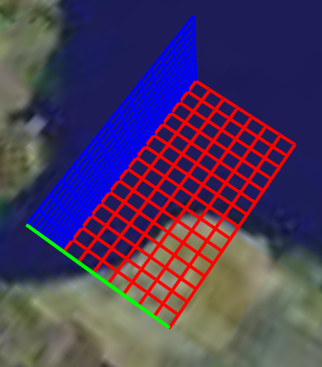

Visualization of grid lines. Axes can be Cartesian (but with distortion due to projection type) or radial (also with distortion). Combinations of the following planes can be generated at once: xy, xz, and yz. For each plane, a separate folder will be created containing grid lines at the specified locations. In addition to the Cartesian axes, a radial axis can be specified as well, namely that of heading (i.e. direction on a compass).
Draws the grid lines of the axes specified by parameter 'axesType'. Set the value of S to combinations of the letters 'x', 'y', and 'z' in order to draw Cartesian axes. Set S to 'h' for a directional plot (heading). For each axis included in input variable "S", you need to specify the locations of the tick marks (or equivalently, of the grid lines) using their respective parameters ('xTick', 'yTick' and 'zTick' for Cartesian; 'hTick' for radial). The grid lines of each plane will be organized into a separate folder bearing the name of the plane (e.g. 'xy-plane'). This will make it easier to enable or disable an entire plane in one mouseclick when viewing them in Google Earth.
In addition to the above, a number of options can be set regarding the appearance of the grid lines. Assigning values to the parameters can be accomplished by inclusion of an alternating sequence of parameters and their value. The table below provides an overview of the authorized options. The order in which the parameters are included does not matter. Please be aware that the options are case-sensitive. Examples are provided further down.
Latitudes on the Southern hemisphere and longitudes on the Western hemisphere must be passed as negative values.
Some transformation may occur due to the projection.
See the demo file demo_ge_axes for more details.
kmlStr = ge_axes('axesType','xyz',...
'xTick',5+[0:0.2:1.5],...
'yTick',52+[0:0.1:1.5],...
'zTick',[4e5:1e4:5e5],...
'msgToScreen',true,...
'xyLineColor','FF0000FF',...
'xzLineColor','FF00FF00',...
'yzLineColor','FFFF0000',...
'lineWidth',3);
ge_output('demo_ge_axes.kml',kmlStr);
The above lines of code will display as follows when viewed in Google Earth:
